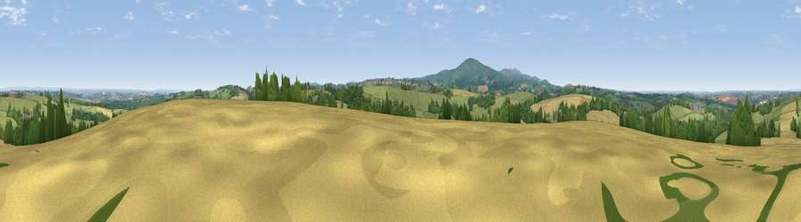

Viewpoint near Spreyton
#16078 in England · top 25% of its area beats it · near SpreytonWhere it is
The exact computed spot (SX 67175 97375). Click the marker for map links.
The view, rendered

A 360° render of this exact spot computed from the terrain model, tree cover and land cover — summer colours, afternoon light, calibrated against photographs of famous viewpoints. Real trees, hedges and buildings will differ in detail.
The panorama
Grey silhouette: terrain skyline in each direction (720 bearings, Earth curvature and refraction included). Dashed green: skyline with trees (+15 m) and buildings (+8 m) as obstacles. Blue strip: how far the ground is visible on each bearing.
Where the view opens
Wedge length = distance to the farthest visible ground on that bearing (vegetation-aware). Rings at 10, 25 and 50 km.
What fills the view
67% grassland · 16% woodland · 15% cropland · 1% built-up
Angular shares of the visible panorama (visual magnitude), not map area. Landscape diversity 0.39 (0–1 Shannon).
Key numbers
More beautiful places nearby
The staircase of upgrades: each row has a higher view potential than everything closer. Driving times are estimates from straight-line distance, calibrated against real road routing — check an actual route before setting out.
| Place | Direction | Drive | Score |
|---|---|---|---|
| Viewpoint near South Tawton | W · 3 km | ~7 min | 59.9 |
| Viewpoint near Whiddon Down | S · 4 km | ~10 min | 67.0 |
| Viewpoint near Whiddon Down | S · 4 km | ~10 min | 67.5 |
| Viewpoint near Sticklepath | SW · 5 km | ~12 min | 73.5 |
| Viewpoint near South Zeal | SSW · 7 km | ~14 min | 75.0 |
| Viewpoint near Drewsteignton | SE · 11 km | ~21 min | 75.1 |
| Yes Tor | SW · 12 km | ~22 min | 78.5 |
| Viewpoint near North Bovey | SSE · 16 km | ~28 min | 79.3 |
50.76072, -3.88462 · source: screening · position refined by local search. Computed location — check access rights before visiting.